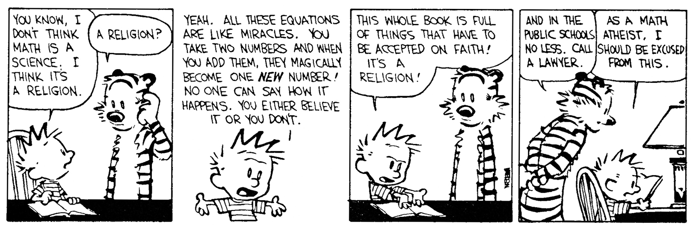

Number Theory
Congruences
Definition. If a nonzero integer $m$ divides $a-b,$ then we say that $a$ is congruent to $b$ modulo $m$ and write $$a \equiv b \mod m.$$
Theorem.
Note. We're allowing the divisor $d$ and $mc$ to be negative.
Corollary. Let $f$ be a polynomial with integer coefficients. If $$a \eq b \mod m$$ then $$f(a) \eq f(b) \mod m.$$
Theorem.
Complete residue system
Definition. If $x \eq y \mod m,$ then $y$ is called a residue of $x$ modulo $m.$ A set $x_1,\dots,x_m$ is called a complete residue system mod $m$ if for every integer $y$ there is an $x_j$ s.t. $y \eq x_j \mod m.$
A set of $m$ integers forms a complete residue system mod $m$ iff all integers in the set are distinct mod $m.$
Theorem. If $b \equiv c \mod m,$ then $(b, m) = (c, m).$
Fermat's Theorem
Theorem. Let $p$ be a prime. If $p \nmid a,$ then $$a^{p-1} \equiv 1 \mod p.$$ For every integer $a,$ $$a^p \equiv a \mod p.$$
Euler's generalization of Fermat's theorem
Theorem. If $(a, m) = 1,$ then $$a^{\f(m)} \equiv 1 \mod m.$$
Lemma. Let $p$ be prime. Then $$x^2 \equiv 1 \mod p \quad\text{ iff }\quad x \equiv \pm 1 \mod p.$$
Wilson's Theorem
Theorem. If $p$ is a prime, then $$(p - 1)! \equiv -1 \mod p.$$
Reference
- An Introduction to the Theory of Numbers by Niven, Zuckerman and Montgomery.
- Everything else from the web.